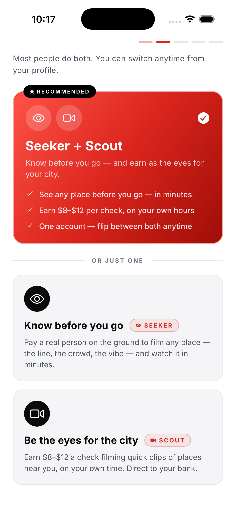
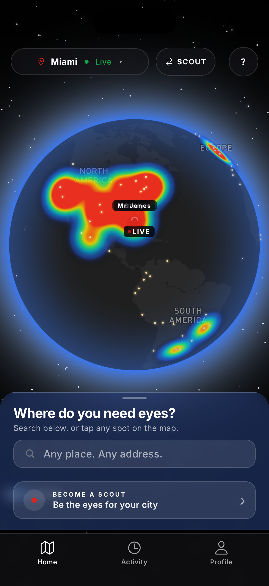
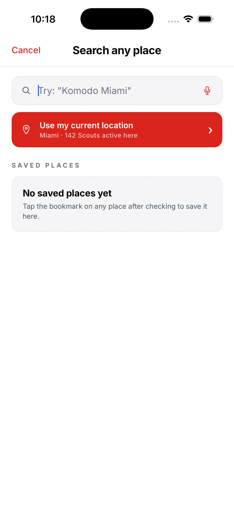
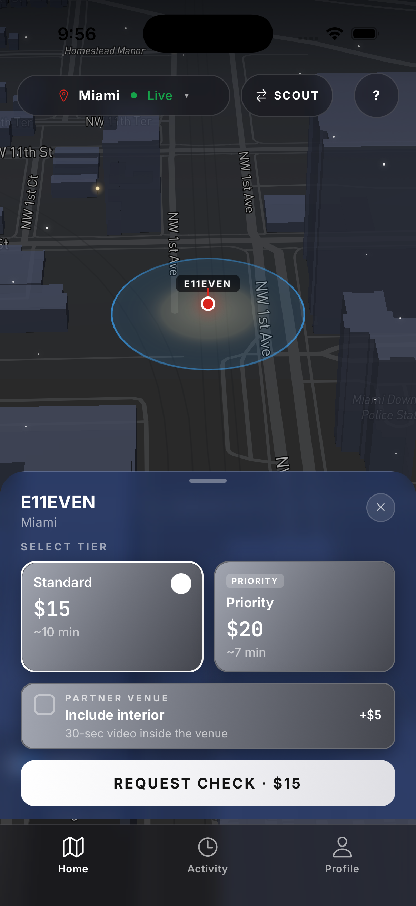
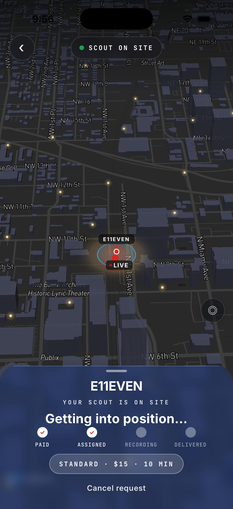
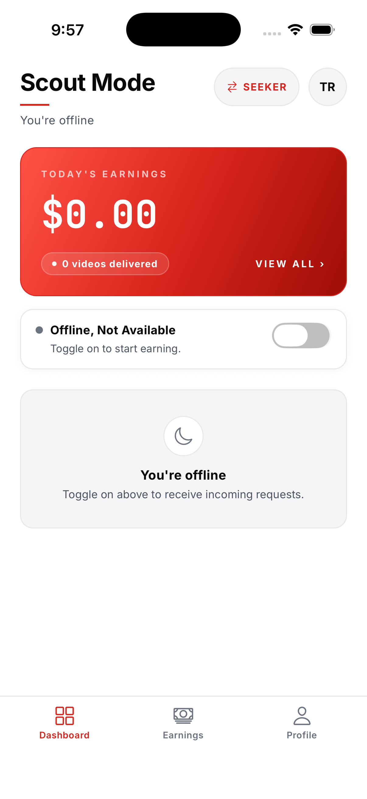
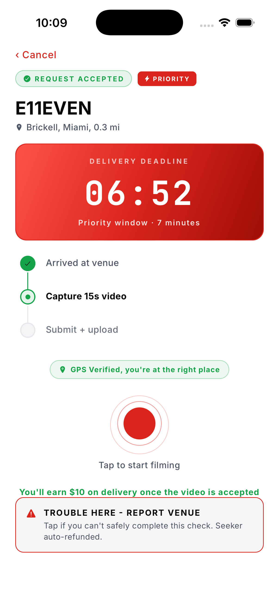
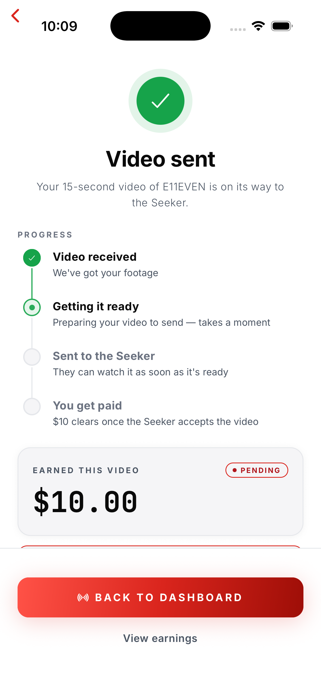

Let Me Check lets anyone pay to have a real person nearby film a short, live video of any place on Earth — and get it back in minutes.
Think Uber, but instead of moving people, we move eyes. A Seeker wants to know what somewhere looks like right now — a club, a restaurant line, an apartment, a used car, a beach, a street after a storm. They search for the venue or place in the app. A Scout (a real person on the ground nearby) gets the request, walks up, films a 15-second clip, and sends it back — GPS-verified and timestamped. Delivered in 7–10 minutes. No staged photos. No old reviews. The truth, live.
This is the very first thing a new user sees.
When someone downloads Let Me Check and opens it, the red brand screen loads, then your promo video plays. When it finishes, it hands them straight to "Choose your profile" — where they sign up as a Seeker, a Scout, or both.
So the video has one job: explain the app fast and make them want to pick a profile and sign up. It's the launch pad — not a trailer buried in a menu. End it pointing at that choice.

Before we drive across town, book sight-unseen, or trust a stranger's listing, we're all guessing. Everyone has thought it: "I wish someone could just go look for me, right now." That's the entire product — ground truth, on demand, anywhere.
The Seeker searches for any venue or place and picks Standard ($15) or Priority ($20). Confirm.
A verified Scout near that spot is pinged. Only Scouts inside the geofence can accept.
The Scout walks up and records a live 15-second clip (30 sec for partner interiors), GPS-stamped on submission.
The clip lands in the Seeker's app in 7–10 minutes. Faces auto-blurred. Off-location clips auto-rejected.
The person requesting a check. Use these for the "search → request → watch it live → get the video" story.




Screen 5 (the delivered video) is a video player — the Seeker's 15-second clip plays here, then they rate the Scout. Only the video itself is dark; the surrounding app stays on the white brand.
The person on the ground getting paid. Use these for the "go online → film → get paid" story.



Note: the Home globe map is intentionally dark — it's the one dark "live planet" surface. Every other screen is the light white / red / grey brand. Keep that contrast; don't lighten the globe or darken the rest.
Clean, editorial, confident. White canvas. Supreme red as the one loud accent. Black text. Grey for support. Premium and modern — think Apple meets a bold streetwear label.
Energy: cinematic, kinetic, trendy — Uber × Apple, Super-Bowl budget feel. Hard cuts on the beat, real people in real cities. A full :60 script exists (separate doc) with beat-by-beat visuals and voiceover.
Protect this line: "Real Eyes. Right Now. Anywhere." — it's the "Just Do It." End every asset on the globe → logo lockup.